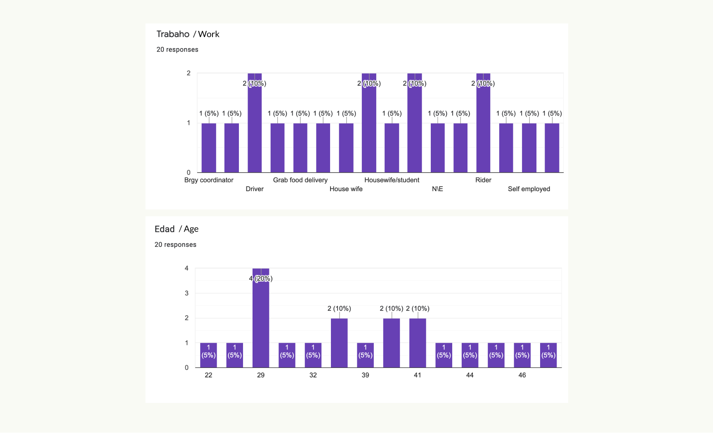

Micro-lending Mobile App
Improving a micro-lending app’s dashboard and eKYC through usability testing
Summary
Agapay is a micro-lending platform that aims to help delivery drivers and small store owners by providing loans with low interest rate. The client needed help designing their mobile application to make the lending platform fully digital from registration to identity verification (eKYC), loan application, loan disbursement, loan tracking, and loan payment. To keep the project’s confidential parts, I will focus on how we improved the dashboard and eKYC designs through usability testings.
•••
Case Study
•••
I. Identifying the Problem
Marites is a 40 year old sari-sari store owner in a small village in Pasig City.
There are times that she needs a small amount of extra funds to replenish her store’s supplies but there are not many lending companies offering that small amount of loan that is payable in 2 weeks or 4 weeks. If there is one, like the “Bumbays” (Indian lender), the interest is just too high.
Thankfully, she discovered the “Agapay” app through word of mouth from her friends and tried it out. She was surprised that everything is done online! It is so convenient, she thought to herself, and it saves her money from commuting. Agapay also keeps her from spending the money on other things because it comes in the form of a voucher which she can use in the grocery stores near her. The interest rate is also low compared to the other lenders.
•••
II. Challenges and Solutions
Designing from scratch. Identifying the screens and flows needed to build the app.
My design process always involves the client in every step to capture issues and adjustments as early as possible. This avoids miscommunication and misalignments between the output and what the client has in mind.
This project has no development team yet at this stage. I had to work directly with the client and help them identify the main flow and screens before we could move forward. To achieve this, I first created a sitemap, then, created the user-flows based on the sitemap.
Part of the sitemap to identify the main flows.
User-flows based on the sitemap. We were able to identify what screens are needed based on the detailed user-flows.
•••
Designing and testing the first version of the dashboard
The first iteration of the dashboard. The main action that we want the user to focus on is to use his active voucher and to be able to apply for a loan if he has no existing loan. The voucher cards at the top are in a horizontal scroll so users can just swipe left or right to view all of his active vouchers. A list of all the active and past loans is shown on the dashboard.
Wireframe of the first iteration of the dashboard.
High-fidelity design of the dashboard’s first version.
We tested the first design of the dashboard with 9 users that fit the profile of our target market: Parcel drivers, small store owners, breadwinners and within the age bracket of 22 - 50 years old.
Users’ profiles that we collected on a survey every time we conduct a usability-testing.
(Left to right) Users answering the profile survey. One of the users performing a given task in the main dashboard. One of the users was asked a question after performing a task.
Our findings
There were a couple of areas of improvement we were able to find when we tested the dashboard’s design.
The term “Dashboard” is still too technical for the majority of the users. Majority of them said that they are more familiar with the term “Homepage” than “Dashboard”.
One of the users in our first batch of usability testing. My client was the one taking down notes while I gave the tasks and asked the questions to the user.
Most of the users got stuck when trying to use a voucher from the dashboard. They did not know that the vouchers at the top are clickable despite the text saying “Use Voucher”. They also did not know that they could scroll through the vouchers horizontally.
The dashboard design displays the vouchers, the active loans, the “apply for a loan” button, the past loans, and the referral button, making it too overwhelming for the users. Most of them had a hard time locating the correct button to perform a task.
•••
Improving the design of the dashboard based on our first usability testing
To solve the issue of users having a hard time finding the right button to perform a task due to the overwhelming number of elements on one page, we decided to try a 3x2 grid of buttons based on the actions they correspond to. Eg. “Get a loan”, “User a Voucher”, “Pay a Loan”, etc.
Wireframe of the dashboard’s improved version
Wireframe of the dashboard’s improved version
We tested the revised version and the users were able to find and select the correct button to perform a task faster compared to the first version.
One of the testers in our second round of testing of the new dashboard and the revised version of the main features
•••
Improving the design for using the voucher based on our first usability testing
Making the dashboard action-based solved the issue of users getting lost on how to start using a voucher. The action button with the label “Use a Voucher” guided the user on the button’s purpose.
Wireframes of the action-based dashboard and vouchers page
We got rid of the horizontally scrollable container for the voucher cards because most of the users did not know it was scrollable. The voucher’s discoverability was increased when they were displayed vertically in a dedicated page just for vouchers.
The users also found it easier to find a particular brand of voucher with the logo being displayed fully on the voucher instead of using a vertically-displayed text of the brand’s name.
•••
Simplifying the experience of eKYC (Digital Know Your Customer)
eKYC is a digital process in which users have to fill-in their personal information in order to prove their identity.
We prepared the prototype using a combination of Figma and Framer to make the input fields interactive. This is to simulate as much as possible the real-life experience of users filling out the eKYC forms. We also took note of the average time a user completes the eKYC.
Users go through the simulation of completing their personal information
While simulating the experience of taking a selfie with the ID and a full A4-sized paper, all of the users had trouble with the selfie photo because they had to hold a large piece of paper, their ID, and their phone. We did not anticipate this while doing the designs and the instruction because in our example, there was a second person holding the camera, while in actual the users have to do it alone.
Our example selfie for the ID and user details written on an A4 paper to verify their identity. A second person was holding the camera in the example so we did not think it is harder to do if done solo.
We segmented the eKYC into 4 sections to help the users feel less overwhelmed with all of the requirements and fields needed to verify their identity. The steps text also deemed effective in guiding the users what to click next when we tested it out. The original design did not have any steps and the users felt stuck after completing a section because they did not know they have to complete all the sections.
Revised version of the eKYC steps. The numerical steps guided the users what to click next after completing a section.
•••
Listening to the users about their experience during the usability testing
We gathered the group at the end of each of our testing sessions and asked them about their overall experience doing the usability testing, how we can improve, and what they think of the product in general.

Group of testers during one of our huddles after the testing session
Our group photo with my client’s team and the users who tested our prototype. We made sure that they had a delightful experience doing the testing as well :)
•••
III. Conclusion
Investing in a user-centric product where a client actually spends time and money talking to actual users to test out the design and the product’s concept yields a good return 100 percent of the time. We get to see flaws in how we designed the product which we have missed ourselves even after a couple of iterations that we already did as a group internally.
•••
IV. What Could Have Been Done Better
Since Agapay is a freelance project, I am not committed to it most of my working time. I only get to spend 20-40% of my working time. This resulted in some rushed deliverables like the icon placeholders that I used that I was not able to replace with a hand-crafted version.
•••
Background
Client:
Agapay
Role:
Product Designer
Responsibility:
- Help the clients define their requirements by using tools like site-map and user-flow diagrams.
- Research similar applications and design patterns.
- Create the UI design from scratch and to make sure that the clients are involved in every step of the design process to get their feedback as early as possible.
- Write the micro-copy used in the app with the clients’ help from time to time, especially with the Filipino translation.
- Create a plan and write the usability testing outline, scenarios, and tasks.
- Create the survey form to gather personal information for each of the users in each of our usability testings.
- Prepare the prototype for the usability testing.
- Conduct the usability testing as the main facilitator.
- Conduct the usability testing.
- Synthesize findings and recommendations based from the usability testing.
•••
For it is God who works in me,
both to will and to work for his good pleasure. - Phi 2:13